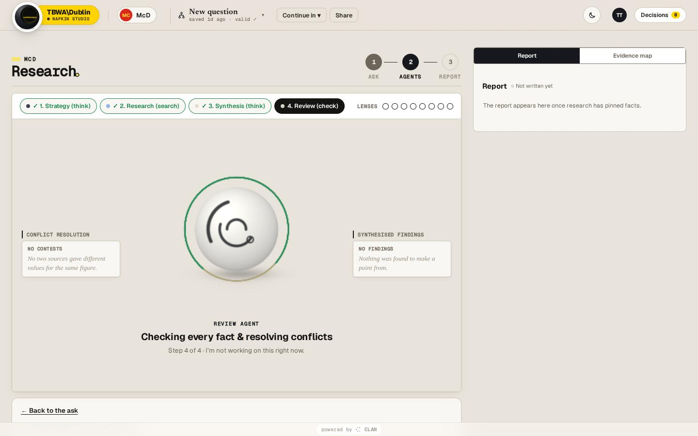
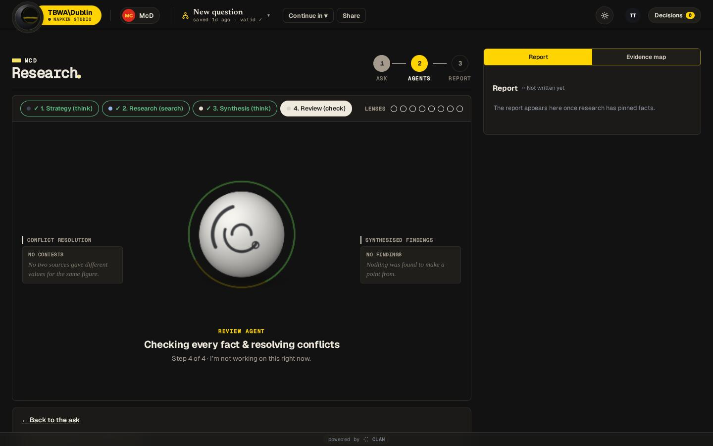

05 · Roles, materials, sizes, the run stage
Agents
Agents are named by role, never by persona. Each is drawn as one sphere, in its own material and with its own marks (arcs and circles), inside one shared satin finish, with a thin horizon in Napkin's line colour (#BCBFF5 at 35%) as a sign of belonging. The lookup, the words and the sizes are in app/templates/shared/agent-sphere/roles.js (NapkinRoles). The material table is in agent-view.js (MATS, MAT_OF), and Synthesis's ceramic is in extra.js.
Roles, materials and marks
Each card shows the static frame (NapkinRoles.still) at 96, 44 and 28px, rendered from the real code. Live views are WebGL on the page's one scene (scene.js), and pages without WebGL get these frames.
knowledge · onyxreads what you sent · kind readstrategy · graphiteplans the work · kind thinkresearch · glassfinds evidence · kind searchsynthesis · ceramicfinds the points · kind thinkbrief · pearlwrites the brief · kind writereview · pearlchecks every claim · kind checkdeck · paperbuilds the deck · kind writeorchestrator · onyxroutes the work · kind workThere are more roles in the table (idea, copy, approval). The words come from name() "Review agent", the() "the Review agent" and caption() "REVIEW AGENT". Older documents store crew keys and persona names (Ellis, Dara, Jude…). NapkinRoles.of maps them to the role, and they are never shown.
Which agent runs which stage
| App | Stage → role |
|---|---|
| Brief | extract → Knowledge · context → Strategy · draft → Brief · judge/check → Review |
| Research | extract/identify/select → Strategy · research → Research · synthesise → Synthesis · report → Review |
| Deck | every stage → Deck |
Materials
pearl#EEECE7ink #16191D · gloss 0.7
graphite#242936ink #EEF0F4 · gloss 0.5 · metal 0.15
chrome#C9CED8ink #16191D · gloss 1 · metal 0.95
glass#DCE6F2ink #16191D · gloss 1 · glass 0.85
ceramic#E4DCCFink #2A2622 · gloss 0.4
stone#B9BCC3ink #16191D · gloss 0.25
onyx#12141Aink #F1F2F5 · gloss 0.95 · metal 0.25
paper#F7F7F5ink #16191D · gloss 0.15
Sizes
| Size | Where | Code | Status |
|---|---|---|---|
| Stage | the run stage, centre (.aglbox) | mount(el,{rFrac:[.27,.24], cyFrac:.45}) | built |
| 88–96px | a block at the top of the side panel while a run works | none yet | in progress: documented as specified, not in the build |
| 44px | the side panel's job line, one for every app (owner, 11 Nov: the brief's and research's were different sizes) | NapkinRoles.side(r, text), SIDE = 92, .side-agent card: padding 10px 14px, radius 12px, 13.5px/500 | built |
| 28px | avatars, list rows, Decisions rows | still(r) default, tag(r,{size}) | built |
The run stage
A stage is any element with data-nk-stage, holding the rail cards (.wcard) on each side and the sphere's box (.aglbox) in the middle. Under it, a caption names the agent in mono caps and says what it is doing in plain words, with "Step n of m".

13- 1The sphere: the stage agent, live WebGL, ring in the agency base (a near-black base rings in its accent, deepened)
- 2Step crumbs: done steps ticked, the current step filled
- 3"Back to the ask": the prompt stays reachable

The hover thread
Hovering a rail card draws a dashed line from the card's inner edge to the sphere's rim: stroke: var(--ag-act, var(--ag-base)), 1.5px, dasharray 4 3 (NapkinRoles.thread(), from the mock's lines 5983–6002). Moving off the card clears it.
The question flow: the sphere rises
When a job is in needs_input, NapkinRoles.ask(stage, true) adds nk-asking. The box eases up to min(156px, 18vh) and the question card (#procAsk, signed by the asking agent) appears under it, in view. The scene follows the box for 900ms. When answered, ask(stage,false) puts the card away and the sphere comes back down. Under reduced motion there is no easing.
roles.js ask() and brief-maker/index.html:1331–1392 (.sstage.nk-asking).Agents never appear in the bar
Do
The bar shows the job in words: the job chip "Working · step N/M" or "Your call · step 3/8", and the Deep O mark's state.
Don't
A crew of agent avatars or a sphere in the top bar. (The bar keeps only your own initials, .tb-me.)
shell.css still carries a rule for .tb-crew .cw.ag ("the agent at work in the crew: its own sphere"). The rule says agents never go in the bar, so treat that selector as legacy and do not render into it.